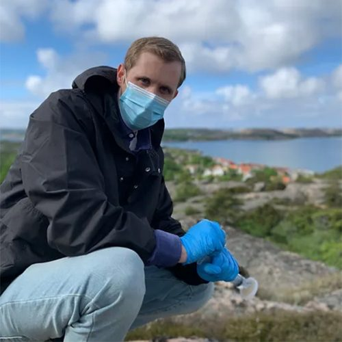
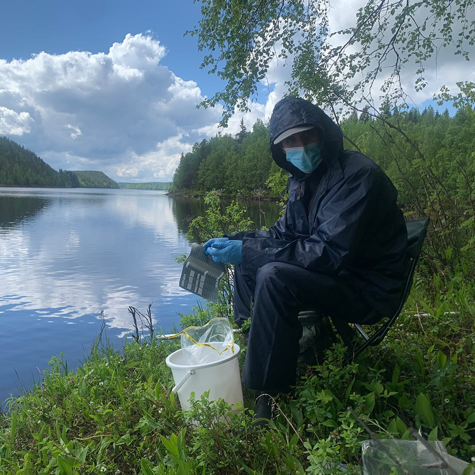
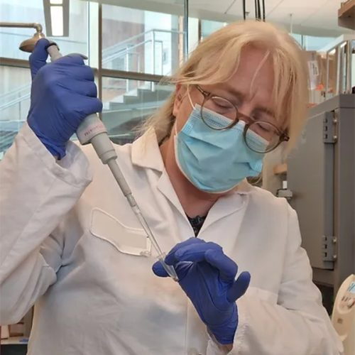
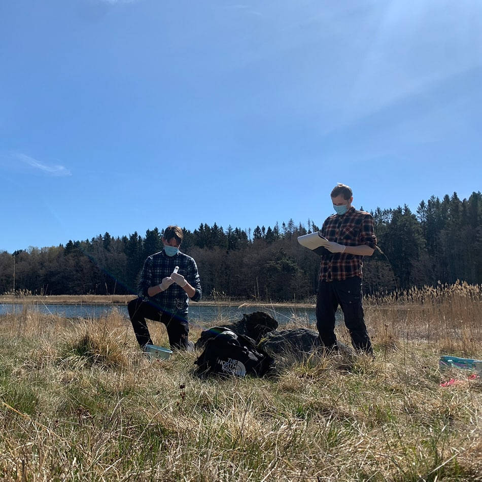

From a water sample to a picture of life beneath the surface. From a footprint in the snow to an individual’s genetic signature. Explore the science that makes the invisible visible.
Lynx, polar bears, wolverines and otters leave genetic traces in snow. With the right analysis, those traces can reveal species, individual identity and sex.
The sample
Snow collected from animal tracks.
The question
Which individual passed through — and what is the population’s composition?
The application
Population studies and management of threatened and protected species.
Drag through the process. See how genetic traces can move from an environmental sample to interpreted evidence. Choose an environment and follow the journey through the laboratory.
MIX / FROM TRACE TO INSIGHT
01 / ENVIRONMENTAL SAMPLEA world of traces.
SCHEMATIC ILLUSTRATION NOT ACTUAL SAMPLE RESULTS
DRAG TO EXPLORE →
WATER / ENVIRONMENTAL SAMPLE
Life is in the traces.
A water sample can contain DNA from organisms that are or have been present in the environment.
This illustration shows a principle. Methods, sampling and interpretation are always tailored to the research question.
Choose the question. Understand the method.MIX / Analysis methods
Precision begins with the right question.
The choice of analysis depends on what you want to know, the organisms you are studying and how the sample was collected.
Single-species analysis
+
qPCR / ddPCR
A targeted analysis that looks for DNA from a specific species. Useful for investigating the presence of an invasive or protected species, for example.
Provides insight intoThe presence and quantity of target DNA in the sample.
DNA regions from a mixed environmental sample are sequenced and compared with reference databases. The analysis can identify multiple species within the selected group at the same time.
Provides insight intoSpecies composition in fish, fungal or bacterial communities, for example.
Sequencing DNA in a sample without limiting the analysis to a single target organism. It can provide a broader picture of genetic composition and functional genes.
Provides insight intoGenetic diversity and functions within the sample’s community of organisms.
Variable DNA fragments are used to distinguish individuals and investigate genetic relationships. MIX uses the method for lynx and polar bears, among others, using DNA from snow tracks.
Provides insight intoIndividual identity, relatedness and variation within and between populations.
DNA from snow tracks can be analysed to determine sex using fragments from sex chromosomes. The result helps us understand the population’s composition.
Provides insight intoThe sex of the individual whose DNA was collected.
The illustrations explain the methods and do not show measured data. Sampling, analytical methods and reference databases affect which traces can be detected.
From sample to insightOne partner. Every step.
Science at every step.
Explore how your question becomes scientifically grounded evidence for decisions.

01 / Study design
The question shapes the study.
We start with your needs and the project environment. Together, we choose sampling sites, timing and analytical methods.

02 / Fieldwork
Collect the traces. Leave life undisturbed.
Our field team collects the samples, or your staff use our sampling kits and instructions. We also offer training.

03 / Genetic analysis
From environmental sample to genetic information.
Samples are analysed using the method suited to the question, such as qPCR or sequencing.
04 / Analysis & interpretation
Give the information context.
We handle bioinformatics and compare DNA information with reference databases. Results are interpreted in their ecological context.

05 / Decision support
Knowledge to act on.
You receive a report with results, interpretations and recommendations — for environmental monitoring, conservation or the next stage of your project.
Research that underpins our workMIX / Scientific foundation
From curiosity. To published knowledge.
MIX’s work draws on experience in the field, genetic analysis and research. Explore our scientific publications and reports.
Frontiers in Conservation Science · 2023
Capturing eDNA in snow tracks of polar bear, lynx and snow leopard
Hellström M, et al.
Naturvårdsverket · 2023
LifeDNAquatic: Riktlinjer för optimal hantering av akvatiskt eDNA
Hellström M, et al.
PenSoft Publishers · 2021
A practical guide to DNA-based methods for biodiversity assessment